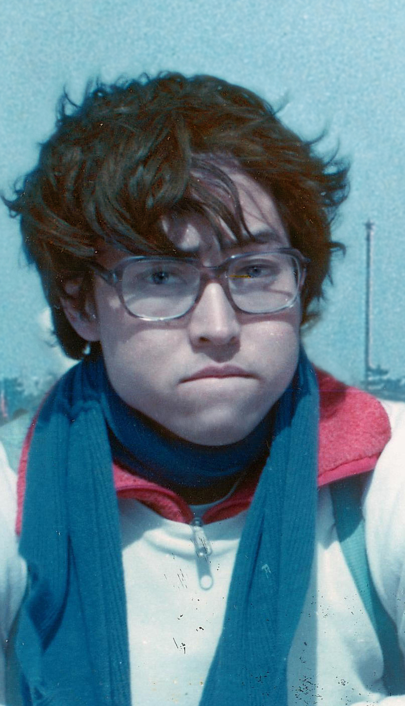
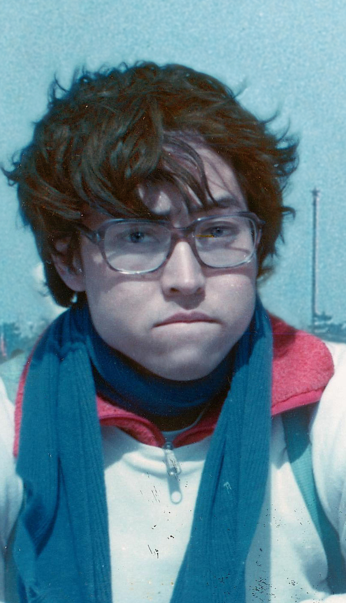
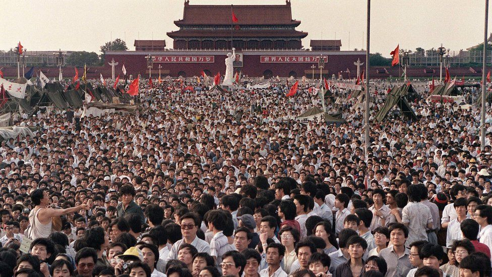
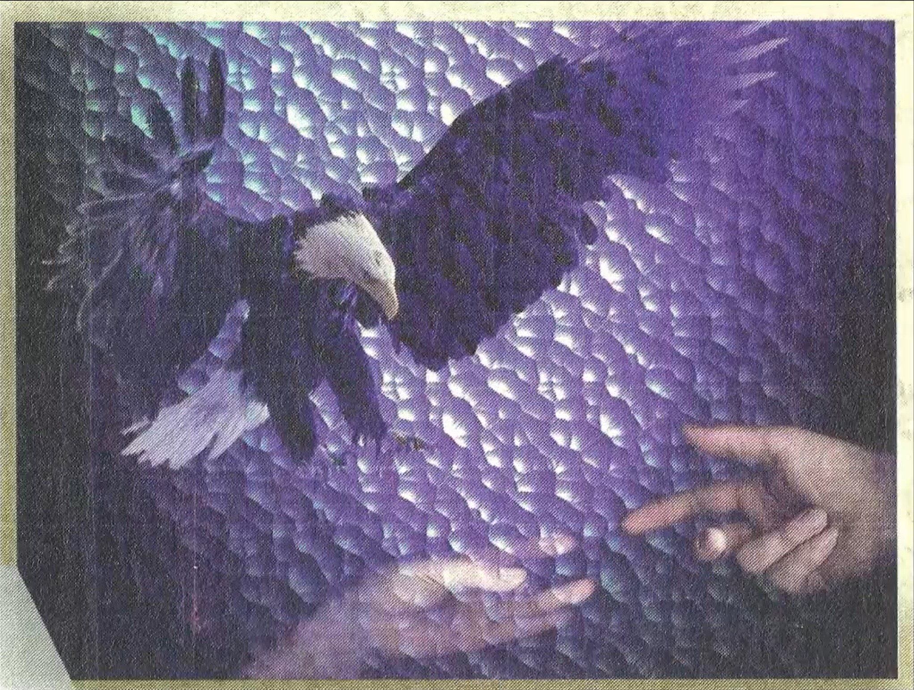
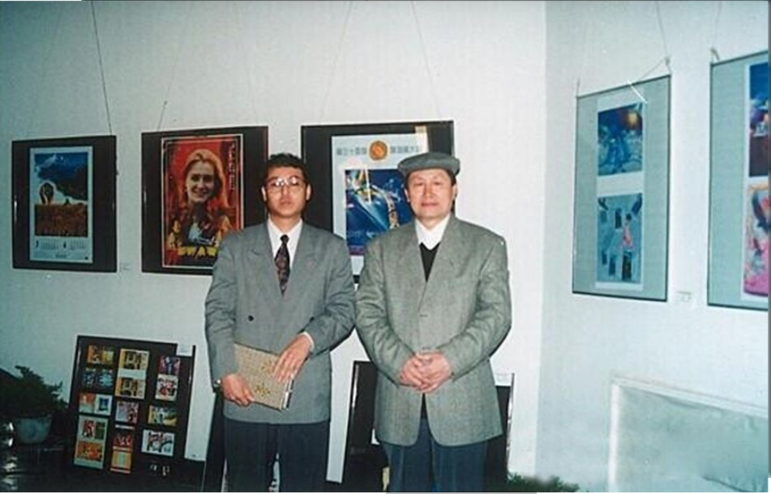
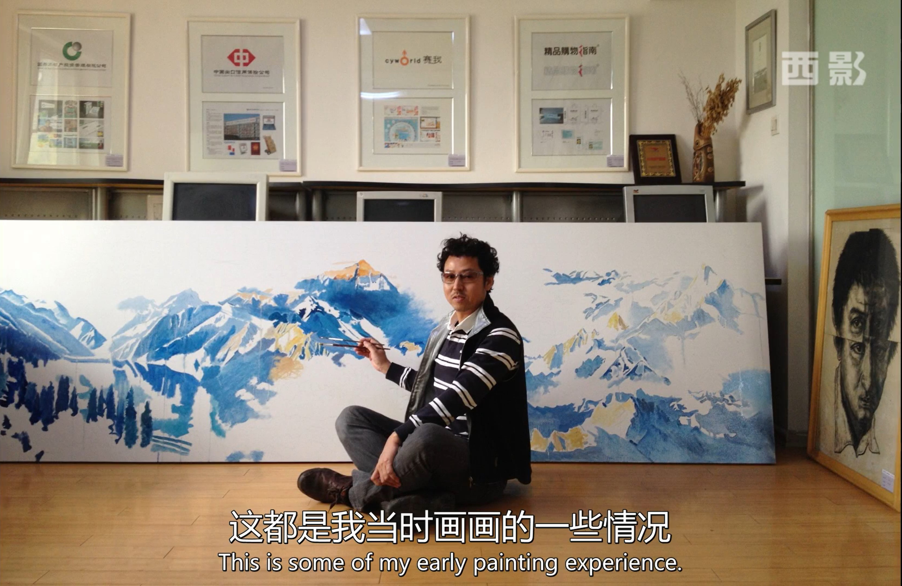

Early Life
-
197_ - 198_
Childhood and Secondary School (Hometown, China)

Mei Shi's parents are intellectuals in the scientific research area, and his father likes painting and calligraphy. His neighbors, uncles and aunts, all majored in science and engineering, and they had completely different views on Mei Shi's persistent preference for painting and literature since childhood. Therefore, when Mei Shi was growing up, he often kept his painting in a sneaky state. Eventually going into secondary school, his passion for art became irreversible and his parents began to strongly support this path.
-
Date, 198_
Bachelor's Degree: Central Academy of Fine Arts (Beijing, China)
Throughout his undergraduate arts experience, Mei Shi developed technical proficiency through realistic works, working long hours alongside his studies.

 

-
Pivotal Moments into Adulthood
-
June 4, 1989
Participation in the 1989 Democracy Movement (Beijing, China)
During the June Fourth Incident, Students from the Central Academy of Fine Arts participated in the 1989 Democracy Movement and hoped to reach democracy and freedom in China through hunger strikes, speeches, and paintings.
Mei Shi was injured during the June Fourth Incident and later censored and detained, during which time he became seriously ill and was moved to residential surveillance. Residential surveillance was lifted after the 1990 Asian Games.
 -
1993
Won first and second place for "China's First Computer Art Exhibition"
For Mei Shi, claiming the top recognition of this prestigious exhibition sparked a serious interest in pursuing digital art and design.
Equipped with a strong foundation from his undergraduate experiences and hoping to pilot a new life for himself, he started the prominent Chinese brand design company "Mainmast Brand Design."
-
2006
MBA from University of Economics and Business (Beijing, China)
For Mei Shi, claiming the top recognition of this prestigious exhibition sparked a serious interest in pursuing digital art and design.
Equipped with a strong foundation from his undergraduate experiences and hoping to pilot a new life for himself, he started the prominent Chinese brand design company "Mainmast Brand Design."

Personal and Professional Progress
For Mei Shi, claiming the top recognition of this prestigious exhibition sparked a serious interest in pursuing digital art and design.
Equipped with a strong foundation from his undergraduate experiences and hoping to pilot a new life for himself, he started the prominent Chinese brand design company "Mainmast Brand Design."
See Complete Design Portfolio"He likes to travel, and he likes to be free and unfettered, even if he just takes a deep breath in front of the sea and listens to the waves; he likes to drive fast, but he doesn't speed. He loves speed without obstacles. There is a natural joyous mentality in his stock. And the heart. Ding also has a world of bliss that belongs to him." - So Hu 2018

"Max 's paintings give giving surging, Choi Ha Wan atmospheric feel. Now the lotus leaf roll, mountain show; suddenly night rain, off the ice dream. Max believes that the pursuit of "charm" is an ideal state of art. Style charm , but also refers to poetry and painting style charm, its aesthetic is characterized by vivid natural, born into without artificial artificial traces, reflecting the mood of clearing away empty talk. Max shi is practicing his artistic pursuits." ——Zhangjun(Associate Dean, Mei Shi, professor of Communication University of China

something about learning from different art cultures?